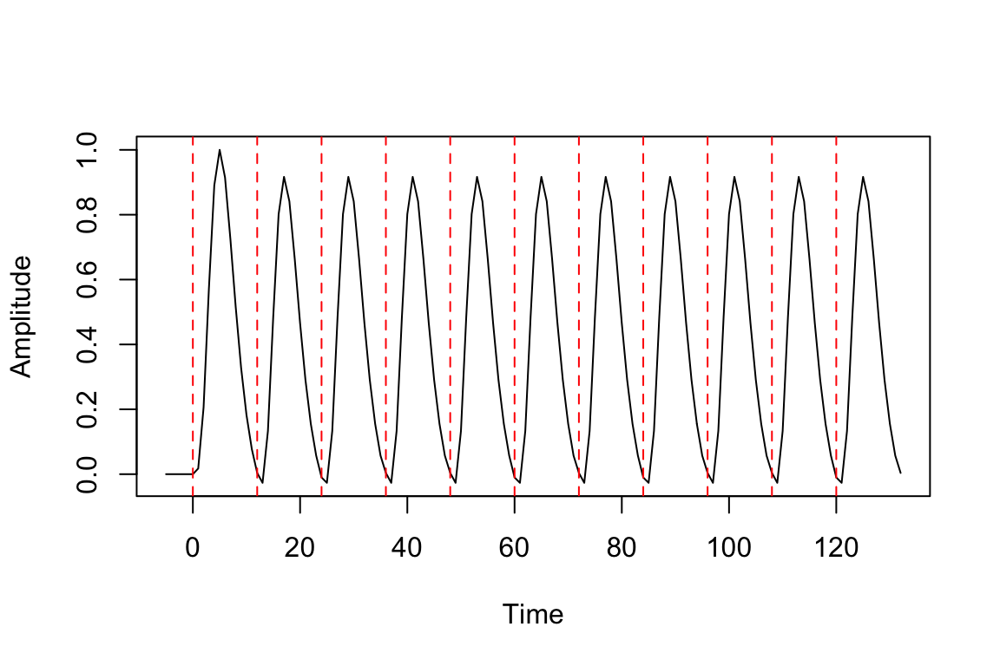
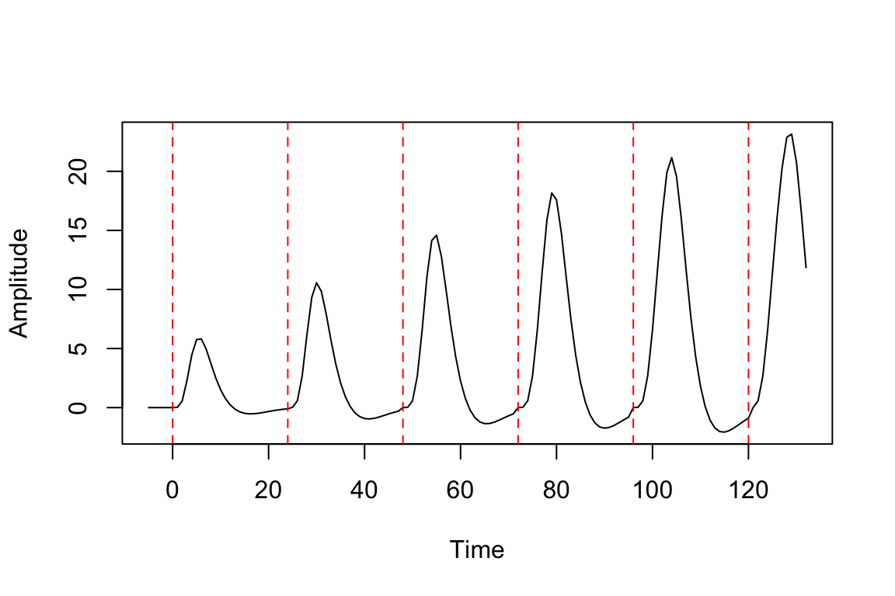

Building Regressors
Bradley R. Buchsbaum
2017-12-10
Building fMRI regressors from event onsets
Suppose we have a simple event-related fMRI design with 10 stimuli spaced every 12s. We want to model each event with the SPM canonical hemodynamic response function (HRF). The duration of each event is 0s, or “instantaneous”. We have 140s worth of contiguous scanning data, collected in a single scanning run with a repetititon time (TR) of 2s.
TR <- 2
onsets <- seq(0, 10*12, by=12)
reg <- regressor(onsets, HRF_SPMG1, duration=0)
plot(reg)
Building fMRI regressors from event onsets with varying duration
Sometimes different fMRI events have different durations and we want to model this variation.We can do this as follows:
TR <- 2
onsets <- seq(0, 10*12, length.out=10)
durs <- seq(1,length(onsets))The durs vectors contains the durations, which increase over the course of the block. We now supply this vector the the regressor function:
reg <- regressor(onsets, HRF_SPMG1, duration=durs)
plot(reg)
Building fMRI regressors from event onsets with varying amplitude
Sometimes we assume that each the amplitude of each event is modulated by an arbitrary continuous variable, for example “learning rate” or “intensity”. We can create a so-called parameteric regressor by scaling the hemodynamic response by an external variable as follows:
TR <- 2
onsets <- seq(0, 10*12, length.out=10)
amp <- seq(1,length(onsets))It is customary center and scale the parametric modulator:
scaled_amp <- scale(amp)
reg <- regressor(onsets, HRF_SPMG1, amplitude=scaled_amp)
plot(reg)
Combining duration and amplitude modulation
TR <- 2
onsets <- seq(0, 10*12, length.out=10)
amp <- seq(1,length(onsets))
dur <- sample(seq(1, length(onsets)))
scaled_amp <- scale(amp)
reg <- regressor(onsets, HRF_SPMG1, amplitude=scaled_amp, duration=dur)
plot(reg)